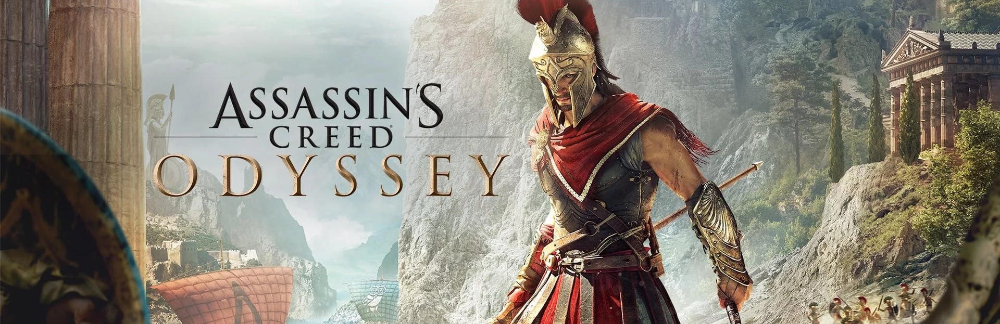

Assassin’s Creed Odyssey
Assassin’s Creed Odyssey (рус. Кредо ассасина: Одиссея, в русской локализации — Assassin’s Creed Одиссея) — мультиплатформенная компьютерная игра в жанре Action/RPG, разработанная студией Ubisoft Quebec и изданная компанией Ubisoft. Является одиннадцатой игрой в серии игр Assassin’s Creed. Релиз состоялся 5 октября 2018 года на платформах Windows, PlayStation 4, Xbox One, а также Nintendo Switch (только в Японии). События игры разворачиваются в эпоху Древней Греции во время Пелопоннесской войны. Assassin’s Creed Odyssey стала приквелом Assassin’s Creed Origins. Игроку предоставлены на выбор два главных героя: спартанские наёмники Алексиос и Кассандра, являющиеся потомками легендарного царя Леонида. Игровой процесс В Assassin’s Creed Odyssey делается ещё больший упор на ролевую составляющую, чем в предыдущих играх серии. В игре присутствует интерактивная система диалогов, нелинейные квесты, различные концовки и возможность завести роман с персонажами любого пола, вне зависимости от пола игрока. Игрок может выбрать пол своего персонажа. В отличие от Assassin’s Creed Syndicate переключаться между персонажами нельзя, выбор делается лишь раз в начале игры. Также он носит косметический характер и никак не повлияет на сюжет или геймплей[1]. Главные герои — Алексиос и Кассандра, брат и сестра, являющиеся наёмниками (мистиями) и потомками спартанского царя Леонида. Они сражаются, используя клинок копья своего предка, который наделяет их в бою особыми способностями[2]. Система развития персонажа представляет собой три древа способностей: ассасина, концентирующегося на скрытности, воина с упором на боевые навыки и охотника, позволяющего лучше стрелять из лука[3]. Доступны различные элементы снаряжения — нагрудники, пояса, шлемы, ботинки и наручи, которые можно комбинировать между собой и улучшать. Функцию орлиного зрения у главных героев подобно Байеку из Assassin’s Creed Origins выполняет ручной орёл Икар. Уровень врагов теперь увеличивается вместе с уровнем персонажа. Вернулась шкала известности — при совершении преступлений на глазах у других она будет расти, и игрока могут объявить в розыск[2]. Игровой мир состоит из 28 зон и является самым большим в серии, а также географически разнообразен — в нём присутствуют снежные горы, леса, песчаные пляжи. Значительную часть карты занимают моря[2]. В игру вернулись морские сражения. У игрока есть возможность улучшать свой корабль, а также нанять практически любого персонажа к себе в команду. Рекруты могут давать бонусы к кораблю, вроде улучшения здоровья или повышения урона[4]. Также появились масштабные наземные бои, включающие до трёхсот персонажей. В каждой игровой зоне имеется свой лидер, который может нападать на противника, обращаться за помощью к игроку-наёмнику или пасть от его руки[2]. В игре имеются новые подробности, касающиеся Первой Цивилизации. В настоящем времени Лейла Хассан находится в поисках артефактов и информации о ней. Однажды она обнаруживает потерянную книгу первого историка Геродота, содержащую сведения о спартанском наёмнике, который мог контактировать с артефактами Первой Цивилизации. Копьё Леонида, унаследованное Алексиосом или Кассандрой, является таким артефактом, а сам царь — носитель ДНК Первой Цивилизации[2]. Сюжет Действие игры происходит в 431 году до н. э., за четыреста лет до событий Assassin’s Creed Origins. В ней рассказывается история Пелопонесской войны, происходившей между древнегреческими полисами. Игроку предстоит взять на себя роль наёмника Алексиоса или Кассандры и сразиться на стороне Афин, руководящих Делосским союзом, или же Спарты, возглавляющей Пелопоннесский союз. Главная сюжетная линия концентрируется вокруг попыток брата или сестры воссоединиться с семьёй после того, как в детстве они оба были сброшены с обрыва и оставлены умирать своим отцом по приказу спартанского оракула. Помимо этого игрок столкнётся с задачей искоренения злостного Культа Космоса, охватившего весь греческий мир, и обнаружением артефактов и монстров времён Атлантиды. В настоящем времени продолжается сюжетная линия Лейлы Хассан, впервые представленная в Origins[4]. По ходу игры у главных героев есть возможность встретить таких известных исторических личностей, как Геродот, Перикл, Аспасия, Сократ, Алкивиад, Софокл, Платон, Пифия, Гиппократ, Эврипид, Демокрит, Пифагор и других. Разработка Официальный анонс игры в виде тизера состоялся 1 июня 2018 года[5] через несколько часов после того, как информация о её разработке просочилась в сеть[6]. Игра была традиционно представлена разработчиками на выставке Е3 2018. На пресс-конференции были показаны полноценный трейлер и геймплей игры[7]. За день до презентации произошла утечка скриншотов, демонстрирующих игровой мир, одного из протагонистов, наличие диалогового окна, элементы пользовательского интерфейса и прочее[8]. Back